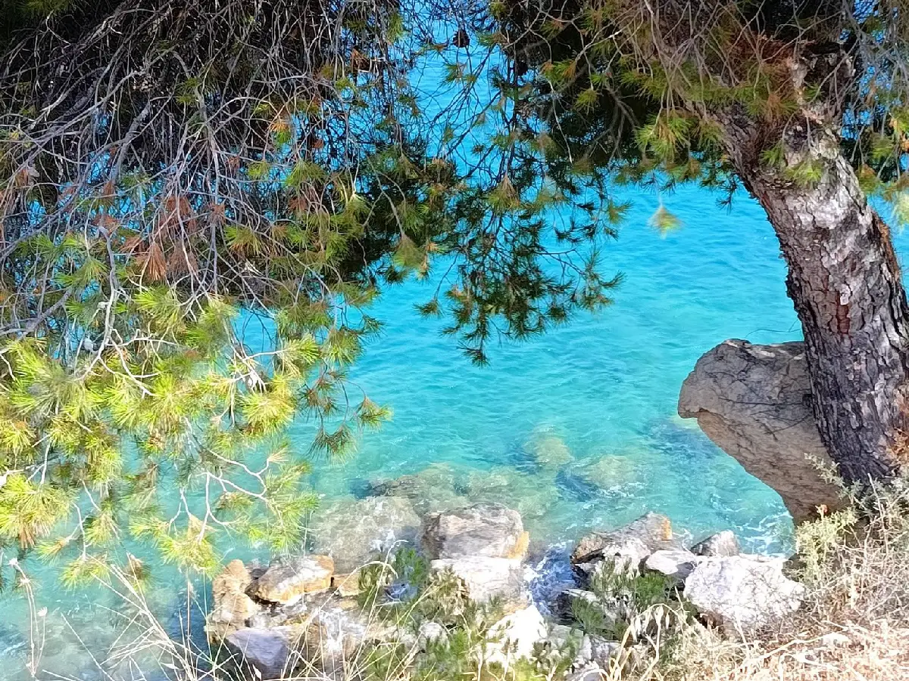
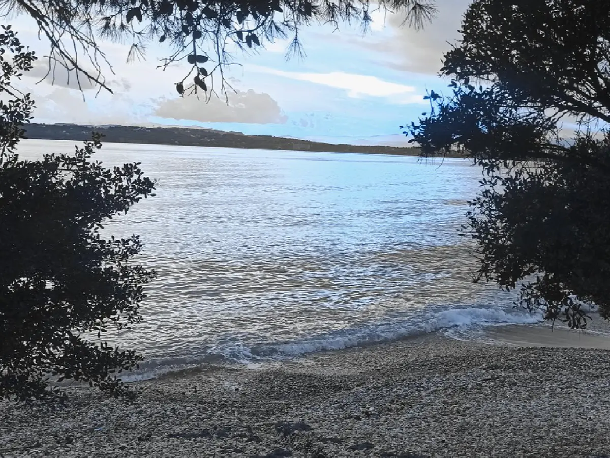

Ο ΤΟΠΟΣ
Πετροθάλασσα — ένα αυθεντικό μικρό ψαροχώρι

ΠΕΤΡΟΘΑΛΑΣΣΑ · ΕΡΜΙΟΝΙΔΑ
Ένας γραφικός, αυθεντικά ελληνικός προορισμός
Η Πετροθάλασσα βρίσκεται κοντά στην Ερμιόνη — μόλις 6 χλμ. μακριά — στα νοτιοανατολικά της ιστορικής Αργολίδας, στην Πελοπόννησο.
Το La Maison Vert Amande και η Πετροθάλασσα μαζί αποτελούν έναν γραφικό, αυθεντικά ελληνικό προορισμό — γοητευτικό, φιλόξενο και γνωστό για τα καθαρά τιρκουάζ νερά και την ψιλή χρυσαφένια άμμο του.
Καθαρά τιρκουάζ νερά, ψιλή χρυσαφένια άμμος και καταπράσινη, γαλήνια ύπαιθρος στα νοτιοανατολικά της ιστορικής Αργολίδας, στην Πελοπόννησο.
Η ΠΑΡΑΛΙΑ
Φυσική ομορφιά, ησυχία και γαλήνη
Οι τουριστικοί οδηγοί δίνουν ελάχιστες πληροφορίες για την Πετροθάλασσα — όσοι όμως την ανακαλύπτουν την περιγράφουν ως «ένα αυθεντικό μικρό ψαροχώρι», και η παραλία της φημίζεται για τη φυσική της ομορφιά.
Παρά τη δημοτικότητά της, η παραλία της Πετροθάλασσας διατηρεί μια ήρεμη και χαλαρή ατμόσφαιρα, ιδανική για όσους αναζητούν μια ήσυχη απόδραση μέσα σε καταπράσινη, γαλήνια φύση.

ΕΡΜΙΟΝΗ, 6 ΧΛΜ.
Ό,τι χρειάζεστε, πολύ κοντά
- Τρία ATM
- Φυσικοθεραπευτής
- Μεσιτικά γραφεία
- Κομμωτήρια
- Τρία φαρμακεία
- Κέντρο τουριστικής πληροφόρησης
- Εισιτήρια πλοίων για τα γειτονικά νησιά
- Ταξί και λεωφορεία για Κρανίδι και Κόστα
- Καφέ, μπαρ και ταβέρνες
- Γιατροί και οδοντίατροι
- Ενοικιάσεις αυτοκινήτων
- Καταστήματα και σούπερ μάρκετ
ΠΕΜΠΤΗ ΠΡΩΙ
Η εβδομαδιαία λαϊκή αγορά
Κάθε Πέμπτη πρωί, από τις 7:30 έως τις 13:30, η Ερμιόνη φιλοξενεί μια πολύχρωμη λαϊκή αγορά με φρέσκα φρούτα, ψάρια και τοπικά λαχανικά, ξηρούς καρπούς, σπιτικό μέλι, κρασί και ελαιόλαδο, λουλούδια, καθώς και ρούχα, παπούτσια, χειροτεχνήματα και είδη σπιτιού.